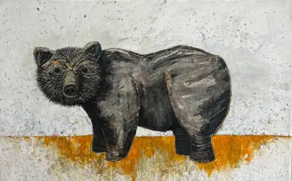

Kyle Parker Cunningham
New Mexico
on the Rio Grande
Dear whoever has arrived,
You have found the front of a website, which is a strange thing to find, so let me tell you what is here and what isn't. Everything I have made and kept — one hundred and fifty-five objects, with their measurements, their materials, where they are now and who has them — lives at archive.kyleparkercunningham.com. That is the real catalogue and it is better than this page at every factual question you might have.
What is here is me telling you where to look. That is all a front page can honestly be once the catalogue exists, and I would rather write you a letter than build you a grid.
This summer the studio has no walls. Jeannie and I are working out of a vehicle across Wyoming, Montana and Colorado — climbing and painting in the mornings, swimming the heat off at midday, documenting in the evenings, all of it running on a satellite signal and a battery. The question underneath it is practical: can the whole operation be carried?
Enclosed, three things



I have been struck by lightning. I mention it because you will meet a painting of a jar with lightning in it, and because five years before it happened I made a print of a man plugged into a wall socket by his own hair. I do not have a theory about that.
If you want the short way in: there is a route through the junipers that takes twelve years and six pictures, and a route through the weather that takes two. If you want the long way, start in 2009 and walk sideways.
Write back if you like. Letters are answered slowly and in order.